About the UNSC Navy
Combatant commands
our navy is divided into two primary combatant commands - Naval Command (NAVCOM) and Unified Ground Command (UNICOM). The former controls all space-based assets and operations, while the latter focuses on terrestrial and close-orbit missions. NAVCOM has administrative control over the Navy and its officers alongside select Marine Corps units. UNICOM has operational authority over UNSC Army and Air Force deployments and some Marine units, and work alongside the Navy to coordinate orbital fire support missions and in-atmosphere support.
NAVCOM and UNICOM form joint task forces that are thus then assigned to one of four Central Commands (CENTCOMs) - responsible for the defense and security of a given region of human space, referred to as CENTCOM Regions. These regions follow well-mapped slipspace routes which connect dozens of star systems; forces assigned to one CENTCOM cannot be moved to another without the approval of HIGHCOM, thus meaning each region must carefully marshal their limited resources. UNICOM planetside forces are organized into task forces that contain ground, aerospace, and maritime combat assets.
a brief history
Origins
By 2160, two dissident movements, the Koslovics and the Friedens, emerged in opposition to the United Nations and national governments of Earth. This led to violent conflicts across the Solar System, including the Jovian Moons Campaign and the Rainforest Wars. To address the growing unrest, the United Nations created a powerful military force in 2163, composed of naval and marine units from various nations, marking the birth of the United Nations Space Command (UNSC).
Mars Campaign
The Mars Campaign in 2163 was a turning point for the UNSC. Using a Blitzkrieg-style strategy, the newly formed UNSC Marines carried out a successful offensive against Koslovic and Frieden forces on Mars. This victory solidified the use of Marines in space and ground assaults, establishing the UNSC as a dominant military force. Following this success, the UNSC absorbed Earth's national military organizations, creating a unified force to defend humanity.
Interplanetary War
In the wake of the Mars Campaign, the UNSC launched a final push to defeat remaining communist and fascist forces during the Interplanetary War (2164–2170). This war solidified the UNSC's control over Earth's military and political systems, with widespread civilian support and a sense of hope for the future. The Callisto Treaty of 2170 ended the conflict, and the UNSC emerged as humanity’s central military power.
The Colonial Era
The pressures of overpopulation and limited resources on Earth led to humanity's expansion into space. The invention of the Shaw-Fujikawa Translight Engine in 2291 allowed for faster-than-light travel, enabling large-scale colonization. The first colony ship, Odyssey, was launched in 2362, marking the beginning of the Domus Diaspora. This period saw the establishment of Inner and Outer Colonies, with Reach becoming the primary naval yard and training academy.
The Insurrection
By the late 25th century, tensions between the wealthy Inner Colonies and resource-rich Outer Colonies led to widespread unrest. This gave rise to the Insurrection, a series of colonial uprisings against the UNSC's control. By 2511, projections indicated that uncontrollable rebellion was imminent. The UNSC faced growing challenges from separatist groups as it struggled to maintain order across human space.
The Covenant War
In 2525, humanity encountered an alien alliance known as the Covenant, sparking the most devastating conflict in human history. The Covenant declared humanity heretical, launching a brutal campaign to exterminate the species. The UNSC found itself outmatched technologically, losing many of its Outer Colonies to Covenant attacks. Over the next 27 years, billions of humans were killed, and entire worlds were obliterated by the Covenant's devastating orbital bombardments. Despite these overwhelming odds, the UNSC fought back fiercely, employing strategies like the Cole Protocol to prevent the Covenant from discovering Earth and deploying Spartan super-soldiers to turn the tide in key battles. By 2552, the war reached its climax with the defense of Earth and the destruction of key Covenant leadership, ultimately leading to the UNSC's hard-won victory.
The Role of the UNSC Navy
"Provide naval forces to ensure freedom of access for aerospace and terrestrial operations."
The UNSC Navy operates, trains, organizes and equips space forces to establish space superiority and close orbital support This force is used for the purpose of suppressing enemy components, in particular those seeking to attack UEG interests. The Navy ensures the safety of UEG trade and commerce, protecting interstellar governance and as such, very little of interstellar consequence happens without the help or oversight of the Navy.
The Navy's collateral functions include;
- Interstellar transportation of UNSC combat assets.
- Development of doctrine, procedures and equipment that are of common interest to the Air Force and Marine Corps.
- Providing forces for joint aerospace and terrestrial operations, in accordance with UNSC doctrine.
- Coordinating with UEG civil agencies for the establishment and maintenance of naval depots and orbital yards.
Throughout the war, the UNSC Navy deployed fleets of ships to protect colonies and planets, often engaging in space battles against overwhelming Covenant forces. Their mission included defending Earth and its colonies, as well as maintaining space superiority.
Explore More About the UNSC
Some of the most well-known ships in the UNSC fleet
About the UNSC Navy
Ship classes
Frigates
- -Anlace 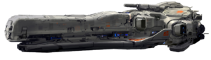
- -Charon 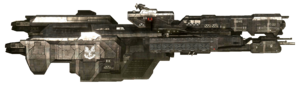
- -Paris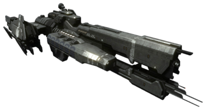
- -Mulsanne 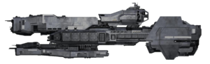
- -Stalwart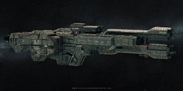
- -Strisent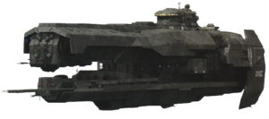
Cruisers
- -Marathon 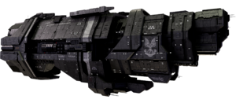
- -Autumn 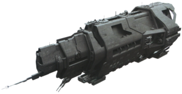
- -Valiant 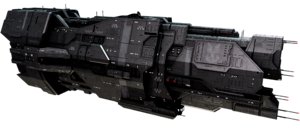
destroyers
- -Able 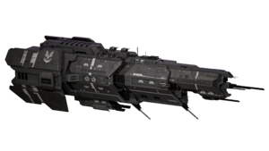
- -Halberd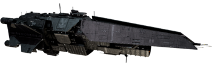
- -Diligence 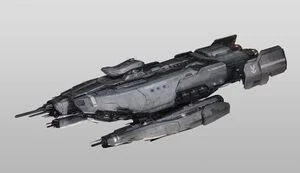
HIGHCOM
The UNSC High Command (HIGHCOM) serves as the top leadership structure of the United Nations Space Command, overseeing all branches of the UNSC, including the Navy, Marine Corps, and Army. HIGHCOM is responsible for strategic military decisions, coordinating major operations, and ensuring the security of humanity across its colonies. Based in the heart of Earth's defenses, HIGHCOM directs everything from large-scale space campaigns to ground-based operations, with key figures such as Fleet Admirals and top military officials guiding the efforts to protect humanity from both external alien threats and internal unrest.
Key Figures
Fleet Admiral Terrence Hood and Admiral Margaret Parangosky are two of the most pivotal figures in the UNSC Navy. Their strategic brilliance during the Human-Covenant War secured countless victories against overwhelming odds. Hood, known for his leadership on the frontlines, led naval forces with unwavering determination, while Parangosky operated in the shadows through ONI, coordinating intelligence operations that crippled the Covenant from within.
Today, their roles have shifted from wartime strategy to maintaining peace in a rapidly changing galaxy. Fleet Admiral Hood now oversees the Navy’s efforts to secure humanity’s new frontiers, ensuring stability and security. Admiral Parangosky, still at the helm of ONI, focuses on emerging threats and safeguarding humanity’s future through intelligence and covert operations.
As humanity embarks on this new chapter, Hood and Parangosky remain vital to its progress. Their combined experience and foresight continue to guide the UNSC, ensuring that even in peacetime, humanity remains prepared for the challenges of an unpredictable galaxy.
The Future of the Navy
As humanity pushes deeper into uncharted space, the UNSC Navy stands as the first line of defense against any threats that may arise. From patrolling distant colonies to safeguarding vital trade routes, the Navy ensures that humans can explore and expand without fear. Advanced ships and skilled crews work tirelessly to maintain peace, ready to respond to any challenge. Whether it's pirates, insurrectionists, or unknown alien forces, the UNSC Navy's presence guarantees security for all, allowing humanity to continue its journey among the stars with confidence.
P.Cole is best known for being the commander of the majority of the UNSC Navy and for his role in creating the Cole Protocol, a law responsible for defending Earth's location A military genius, he defeated the Covenant in every major battle he fought. His battle record was considered to be as or even more impressive than a Spartan-IIs. In 2543, at the Battle of Psi Serpentis, Cole was killed causing a gas giant to go nova destroying a Covenant fleet. Nonetheless, some officers believe that Cole survived and choose to retire away from the UNSC. for mor information read the imposible life and posible death. of Preston J. cole

Jacob Keys was a commanding officer and one of the most brilliant tacticians in the UNSC Navy. He commanded great respect as a highly skilled strategist and inspirational leader to those under his command. His many decorations, thirty-five years of combat experience against the Covenant and Insurrectionists, and ability to keep a secret made him an almost natural choice to command the UNSC Pillar of Autumn and its secret cargo. He was renowned as a war hero for his development of the Keyes Loop tactic. Few outside select Navy personnel know the full story of how Captain Jacob Keyes met his end. What is known, however, is that after escaping Reach in its final hours of destruction, the Covenant relentlessly pursued his ship and ultimately destroyed it. Many believe that Keyes went down with the vessel, a heroic end for a legendary figure. But if you’re after the real story, perhaps the Master Chief himself could tell you—if you’re brave enough to ask.

Commander Miranda Keyes, born Miranda Halsey. as the daughter of the late Captain Jacob Keyes and the late Doctor Catherine E. Halsey. during her time in the military she quickly ascended through the ranks and served as the commanding officer of both the UNSC In Amber Clad as well as the UNSC Forward Unto Dawn during the final months of the Human-Covenant War. She was also the commander of the human expedition force to an alien structure known as the Ark in late 2552, leading humanity in the final battle of the war.Like her father, Miranda Keyes was known for unorthodox tactics, one of the bravest officers in the Navy. This was demonstrated by her decision to follow the covenant higher arc Regret's flagship. into slipspace during the Battle of Mombasa, when she crashed the UNSC Hilbert into the Covenant destroyer over Gamma Pavonis VII, and leading the final battle of the war, when she crashed her Pelican through the a window in a last-ditch effort to rescue Avery Johnson moments before her death.
Due to her unexpected move to follow Regret's ship into slipspace, she was described by Commander Richard Lash as "the ballsiest officer in the Fleet". He further suggested that she may have been trying to live up to the reputation of her father or that she was simply "nuts".(still has more ribbins on her coller than you Dick)
Although she and her father were not particularly close, Miranda identified with him more than she did with her mother. This is suggested by her decision to take up her father's surname after being raised by her mother. As a child, Miranda was often curious and excited about her father's assignments. While her father was serving in the Outer Colonies, Miranda would often learn about naval tactics by herself for her own enjoyment. Even at a young age, she did not require much affection from Jacob, though she did enjoy walking down Armstrong Alley with him to admire the scenery. the navy lost one of its best in that battle.

Active curently serving as a member of HIGHCOM.
Retired passing the title of CINCONI to Admeral Serin Osman(One ONI always ONI though)
Learn More about our heros